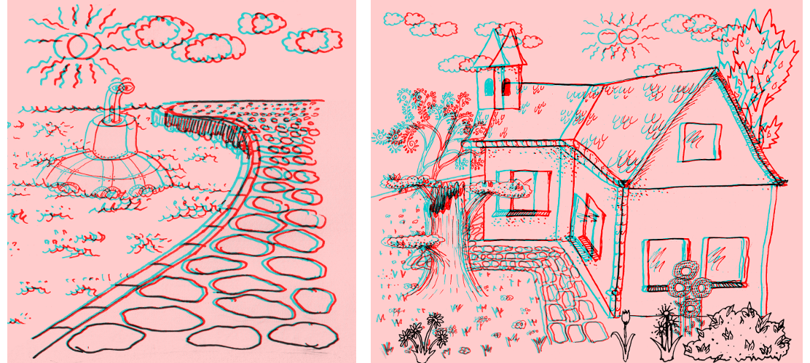
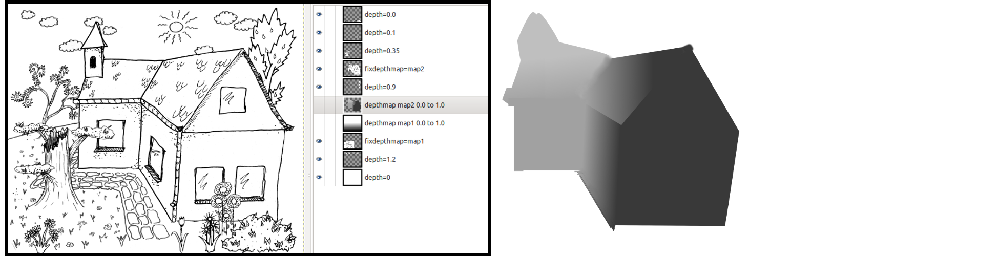

The plugin is visible in the menu "Filters/Goto 40/Create Anaglyph From Layers".
Parameters and simple layer usage
The plugin has the following parameters:
- "min disparity, percent width (near)":
- minimum disparity (shift between left and right, generates depth perception)
- 0 = no depth (screen)
- <0 = between user and screen
- >0 = behind screen
- "max disparity, percent width (far)":
- like min. disparity (should be > min. disparity)
- "luminance correction left (0.0..1.0)":
- 1.0 = no correction; <1.0 darkens left image
- "luminance correction right (0.0..1.0)":
- 1.0 = no correction; <1.0 darkens right image
- "swap left/right":
- normally "no"
- "yes" swaps left and right image (you swap the left and right side of your glasses)
Image and layer properties:
- Only gray level images with and alpha channel can be used.
- All layers must have the full image size.
- All layers must have no layer mask (apply before use).
- The order of layers is used as depth (most visible layer is nearest).
Special layer properties
- Layers named "depthmap <name> <float> to <float>" are ignored. They define depth maps with a given value range, which can be used as depth info for other layers.
- The name of the layer can overwrite the depth deduced from the layer order:
- "background" : a layer without disparity (typically colored in one color).
- "depth=<float>" : fixed depth of this layer (0.0=nearest layer, 1.0=farthest layer).
- "reldepthmap <name>" : use depth map (is scaled such that the range 0.0 to 1.0 fits the space between two layers).
- "fixdepthmap <name>" : use depth map with fixed depths.
Important note when using depthmaps:
- Depth is stimulated through an artifical disparity (a shift between left and right image).
- The depthmaps specify this shift for every pixel.
- However, the depthmaps are used to determine where a pixel comes from and not where it goes to. Thus, a depth map region must be wider than the object is is meant for. Also it may yield strange effects when it as abrupt changes (discontinuities). Best, is to use smooth depth maps, ideally representing a vertical gradient (constant from left to right).

images generated with depthmaps (you need red/cyan glasses)

left: gimp screenshot demonstrating the usage of depth maps; right: example depthmap
Observations / open points
- JPG compression seems to destroy the stereoscopic effect in some cases (artifacts or color corruption?).
- On my screen, with my glasses, with my eyes it is helpful to darken the cyan image.
 1.8.11
1.8.11